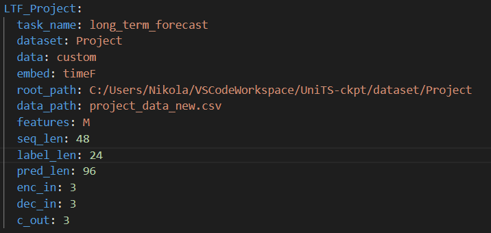
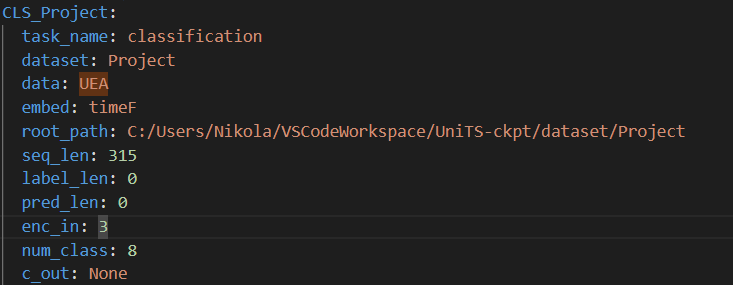
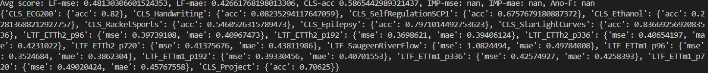
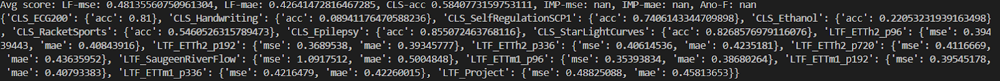
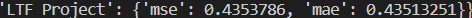

Can we generalize a single model to handle multiple time series tasks better than many task-specific models?
The rise of foundational models in the sphere of generative artificial intelligence have already had a massive impact on deep learning. Foundational models are models that are trained on a broad array of data and are capable of performing various tasks The most notable examples are large language models as they were the first to arise, initially in the area of natural language processing. Starting off being capable of only text-to-text tasks, foundational models have since developed the ability to perform tasks such as image generation, code completion, and visual comprehension among many others. However, one area in which there has not been a development of a unified, foundational model is time series forecasting. Time series forecasting tasks can be broken down into several categories.
Gao et al. developed the UniTS model to handle multiple time series tasks with shared weights. Their generalized model outperforms task-tuned baseline models 27 of 38 times. The tasks consisted of forecasting, imputation, anomaly detection, and classification, all of which can be performed by the same model without requiring any additional task-specific modules. The UniTS model consists of a token based approach inspired by LLMs. The model introduces three tokens: sequence tokens, prompt tokens, and task tokens. The time series input is encoded into the sequence tokens, the prompt tokens carry important information about the task and domain, and the task tokens are concatenated to the sequence and prompt tokens to be transformed into the output prediction later. Their results are indicative of a model capable of zero-shot, few-shot, and prompt-based learning across many domains. We want to identify the strengths and weaknesses of the novel Unified Time Series model proposed by evaluating it on different human activity monitoring tasks. The researchers documented their averaged results across several datasets and tasks, but it is unclear how the model will perform individually on each task for a novel human activity dataset.
In order to conduct our evaluation we had to pull in the repository from the GitHub of the authors. From there got the models that they used as well as their pre-trained weights that were shared throughout the model. After some code changes to get the model running properly on our machine we were able to successfully test the transfer and zero-shot learning capabilities of the models on some of the data that was provided. The data that the authors used was formatted according to the .ts Time Series for classification. Some data processing was done in order to reformat the data for forecasting analysis. There were various data loaders and datasets for the different tasks. We followed the format that was in place for other datasets and added ours to the corresponding files for the tasks of classification, forecasting, and anomaly detection. Our first goal was to test the transfer learning capabilities for classification on our dataset so we ran our data along with the other data that was already present. We chose to only run prompt-tuning rather than doing more supervised training. This meant that only the tokens were updated and not the underlying model. Next, we wanted to test the transfer learning capabilities on forecasting for our data. We followed similar steps and added our data to the data loader for the prompt-tuning forecasting task. The two tasks were defined in the following way:
 After running the model with the conditions specified above we got the following results. For the classification task we received the following results after running our multi-task classification with our new data set among others predefined by the authors. The model returned an accuracy of 0.70625 on the data as can be seen in CLS_Project.
For the our forecasting tasks we got an MSE of 0.4882508 and an MAE of 0.45813653. This can be seen in the task named LTF_Project.
We also ran TimesNet, the generally accepted current SOTA time series model on our forecasting task.
 We were not able to run TimesNet for the classification task. However, for a similar dataset with 3 dimensions TimesNet achieved an accuracy score of 78.0. This indicates that UniTS was not quite as good as TimesNet, but was comparable.As a result of our experiments, we are confident in the capabilities of the UniTS model to produce results for multiple tasks using shared weights without any task-specific modules. This represents a large step forward for time series representations in deep learning models. The unified model generalizes temporal data well enough to outperform state of the art models fine tuned for each individual task. Once the model parameters have been trained, it can be applied to any of the tasks discussed above without any fine tuning modules. This provides utility to deep learning researchers who can save resources and improve efficiency by using the unified time series model to capture general temporal dynamics for several tasks.
[1] Gao, S., Koker, T., Queen, O., Hartvigsen, T., Tsiligkaridis, T., & Zitnik, M. UniTS: Building a Unified Time Series Model. (2024, February 29).
[1] Wu, H., Hu, T., Liu, Y., Zhou, H., Wang, J., & Long, M. TIMESNET: Temporal 2D-variation modeling.
John Berry and Nikola Dobrev.